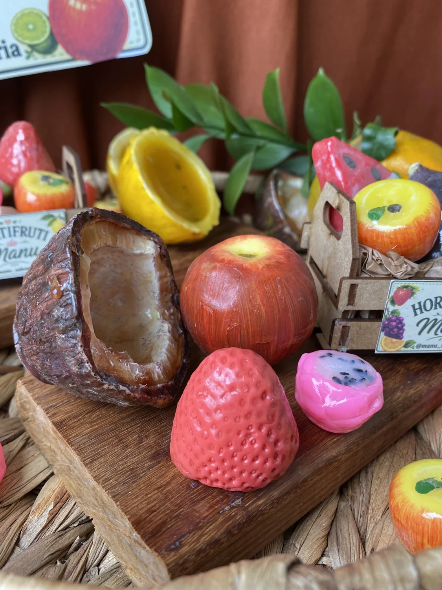
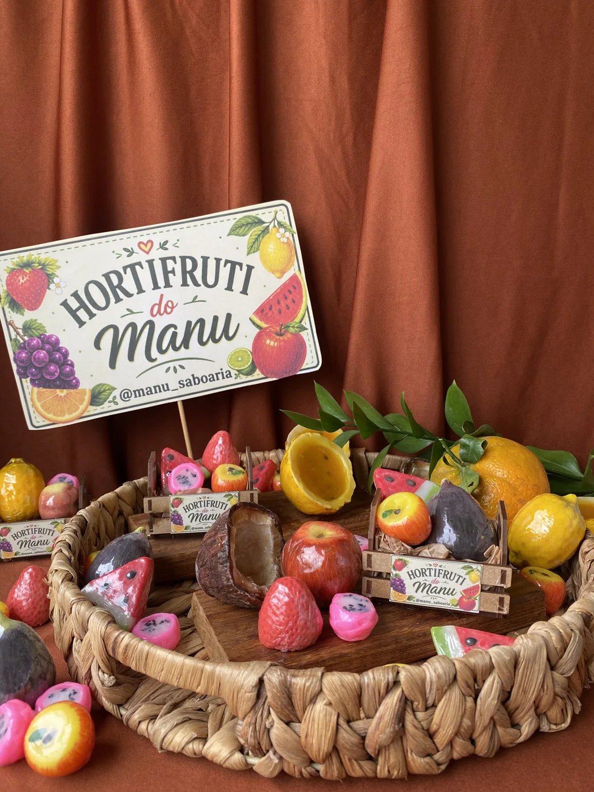
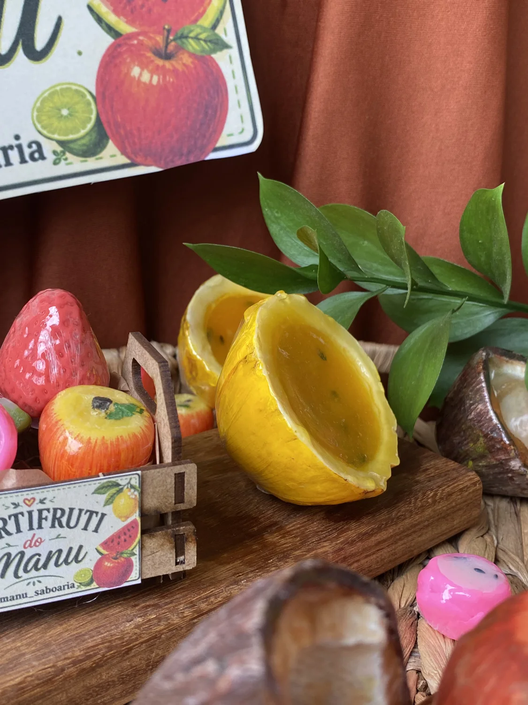
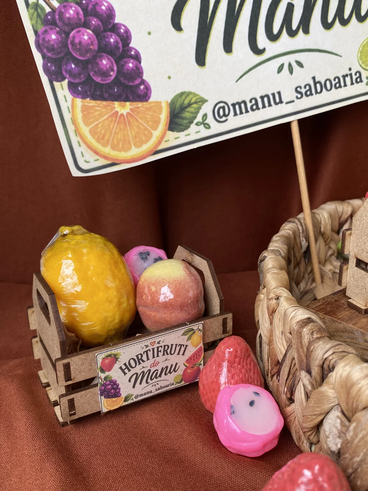
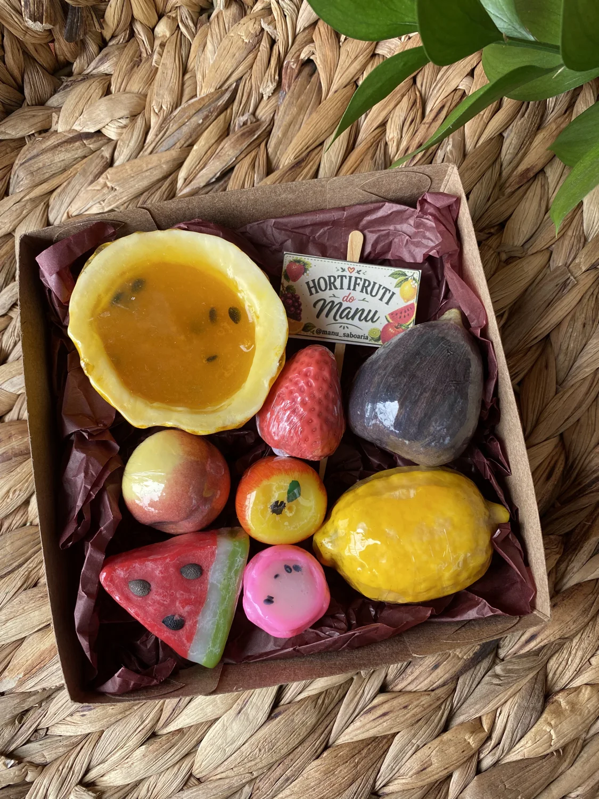

COLEÇÕES ESPECIAIS
Hortifruti do Manu
Sabonetes artesanais em formato de frutas, criados para surpreender nos detalhes e deixar o momento do banho mais especial.
Conheça os sabonetes
Pequenas frutas, grandes detalhes.
No Hortifruti do Manu, os sabonetes ganham formas inspiradas em frutas e revelam o lado mais criativo do nosso trabalho artesanal. São peças que chamam a atenção pela aparência e também são uma opção diferente para presentear.
HORTIFRUTI DO MANU
Conheça os sabonetes



As fotos mostram composições da coleção. Consulte modelos, valores e disponibilidade pelo WhatsApp.
Um presente tão criativo quanto especial.
As frutinhas também podem surpreender na hora de presentear. Conheça os modelos disponíveis e encontre sua combinação favorita.
Tempo de Flores — Edição de Primavera
COLEÇÕES ESPECIAIS · EDIÇÃO DE PRIMAVERA
Tempo de
Flores.
A Primavera Curitibana ganhou novas cores e formas. Conheça a edição Tempo de Flores, com detalhes florais para perfumar e presentear.
Conhecer a coleção com o Manu Uma edição especial para a primavera.Primavera
Curitibana.
Curitibana.
Flores, cores e aromas de primavera.
Uma edição especial para conhecer de perto,
escolher com calma e presentear.
UM OLHAR PARA A COLEÇÃO
A primavera
em detalhes.
Nove olhares para Tempo de Flores.
Toque nas imagens para ver mais de perto.
Fotos da edição Tempo de Flores. Consulte o Manu sobre aromas, valores e disponibilidade.
UM TOQUE DE PRIMAVERA NO SEU DIA
Escolha seus favoritos.
Vamos conversar sobre a coleção?
O Manu ajuda você a conhecer as opções de Tempo de Flores e escolher uma composição para você ou para presentear.